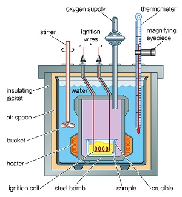

Q.34 : कोयले के ऊष्मा मान के निर्धारण की बॉम्ब कैलोरीमापी विधि समझाइए।
उत्तर-
बॉम्ब कैलोरीमीटर - बॉम्ब कैलोरीमापी द्वारा ठोस ईंधन अथवा द्रव ईंधन के कैलरी मान का निर्धारण किया जाता है। इसमें ईंधन को स्टेनलेस स्टील के बने बॉम्ब में दहन करके ऊष्मीय मान का निर्धारण करते हैं, इसलिए इस उपकरण को बॉम्ब कैलोरीमापक कहते हैं ।
कार्यविधि (Working)- ठोस ईंधन की लगभग 0.5 अथवा 1 gm मात्रा तौलकर स्वच्छ क्रूसिबल में ले लेते हैं। इस क्रूसिबल को रिंग पर लटका देते हैं। दोनों इलैक्ट्रोडों के सहारे मैग्नीशियम के फीते को इस प्रकार लटका देते हैं जिससे कि वह क्रूसिबल को छूता रहे। वाल्व के ढक्कन को अच्छी तरह कस दिया जाता है। बॉम्ब में इतनी ऑक्सीजन भर दी जाती है कि उसका दाब 25 atm हो जाये।

चित्र 34.1 बॉम्ब कैलोरीमापी
इस बॉम्ब को अब कैलोरीमीटर में रख दिया जाता है तथा उसमें भरे हुए जेल की मात्रा. ज्ञात कर लेते हैं। विलोडक का कार्य प्रारम्भ हो जाता है तथा जल का प्रारम्भिक ताप नोट कर लेते हैं। इलैक्ट्रोड का सम्बन्ध 6V बैट्री से कर देते हैं तथा विद्युत् परिपथ (electrical circuit) पूर्ण कर दिया जाता है। इससे मैग्नीशियम का फीता जलता है जिसके फलस्वरूप ईंधन में आग लग जाती हैं जिससे उसका दहन होता है। ईंधन के दहन के फलस्वरूप ऊष्मा मुक्त होती है। यह ऊष्मा कैलोरीमापी में भरे जल का तापक्रम बढ़ा देती है। इस प्रकार जले. का तापक्रम बढ़ने लगता है। जल का अधिकतम तापक्रम स्थिर होने पर नोट कर लेते हैं। (यहाँ उल्लेखनीय है कि ईंधन के दहन के पश्चात् बने दहन उत्पादों को बाहर निकलने की स्वतंत्रता नहीं है)। इस विधि द्वारा उच्च कैलोरी मान का निर्धारण होता है।
गणना (Calculation) - परिकलन के लिए माना कि –
क्रूसिबल में लिए गए ईंधन की मात्रा = X gm
कैलोरीमापी में भरे हुए जल की मात्रा = W gm
बॉम्ब कैलोरीमीटर, विलोडक इत्यादि का जल तुल्यांक = w gm
जल का प्रारम्भिक तापक्रम = t1
जल का अंतिम तापक्रम = t2
ईंधन का उच्च कैलोरी मान (cal/gm में) = L
∴ ईंधन के दहन पर मुक्त ऊष्मा = xL
जल तथा उपकरण द्वारा अवशोषित ऊष्मा = (W + w) (t2 -t1)
ईंधन द्वारा मुक्त ऊष्मा = उपकरण द्वारा अवशोषित ऊष्मा
xL = (W +w) (t2 – t1)
L = (W + w) (t2 – t1) / x cal/gm